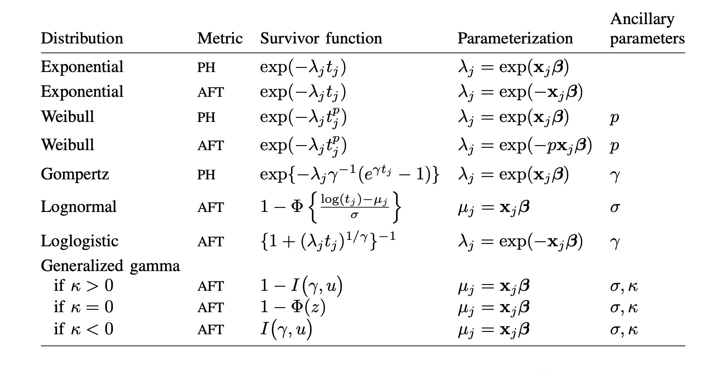
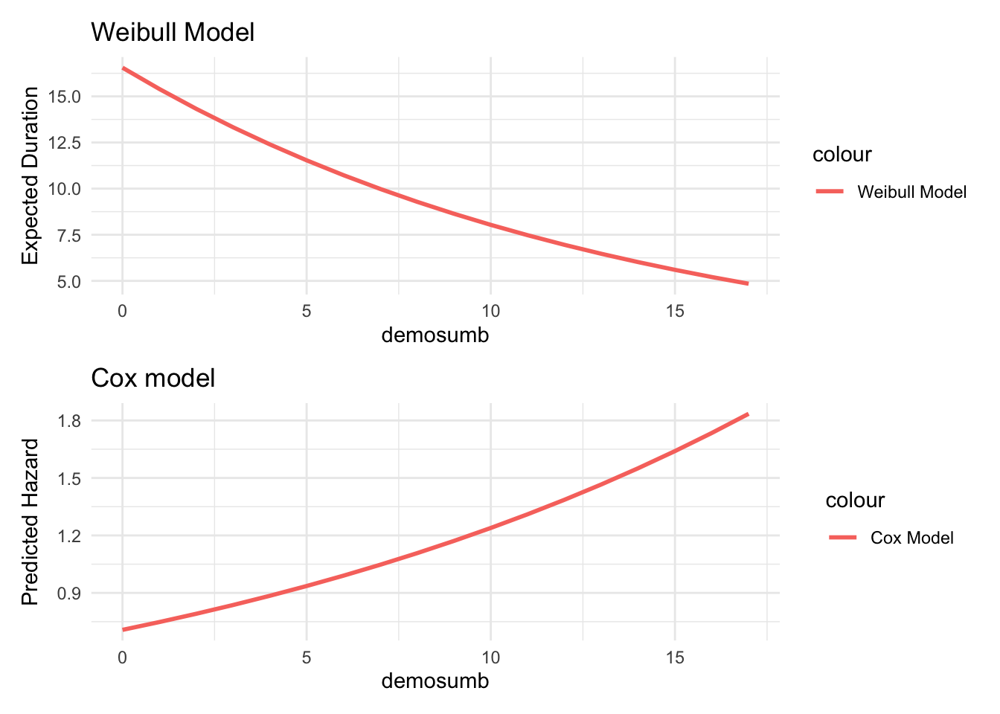
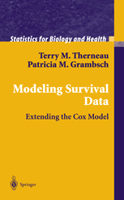

Continuous time models aggregate the duration data into observations that indicate the total amount of time that has elapsed thus far. Two variations on the continuous time models depend exclusively on whether the independent variables vary over time or not. These are known as time-varying covariate (TVC) and non-time-varying covariate models (NTVC).
Data for an NTVC model might appear as follows, where we observe each individual once, we know how long that individual lasted before experiencing the hazard, we know whether or not the observation “failed” or experienced the hazard (if not, the observation is censored), and we have an \(X\) variable:
Individual
Duration
Failure
X
1
6
1
1.4
2
3
1
.12
3
2
1
.6
4
5
1
.5
n
14
0
2.1
On the other hand, the same data for TVC would appear as follows:\
Individual
Duration
Failure
X
1
1
0
1.4
1
2
0
1.3
1
3
0
1.5
1
4
0
1.8
1
5
0
2.4
1
6
1
0.4
2
1
0
1.12
2
2
0
0.12
2
3
1
0.92
3
1
0
0.65
3
2
1
0.62
4
1
0
1.5
4
2
0
1.25
4
3
0
1.45
4
4
0
2.5
4
5
1
0.5
…
…
…
…
A general estimation approach
Quantity of interest is either expected duration or hazard.
In either case, failure depends on survival function.
In either case, some observations fail, others are censored - failure if unobserved but nonzero probability. Recall censoring is almost always due to decisions the analyst makes.
In some (many) social science treatments, observations can fail more than once (multiple failure).
In some cases, there is more than one way to fail (competing risks).
Quantities
Suppose a variable, \(t\), measuring duration. The cumulative probability of surviving up to \(t\) is :
This likelihood should remind you of the LF for binary response models. - Two processes at work here: survival (continuous); failure (binary). - Think of survival as counting periods until failure; cumulative probability of survival. - Think of failure as the occurrence of events; probability survival ends. - Think of censoring as the absence of events; it’s the probability that failure always equals zero in-sample.
Parametric Models
Parametric models are in the framework described above, but where we make parametric assumptions about the density, \(f(t)\), and in turn, about the shape of the estimated hazard function.

Parametric hazards from Stata’s streg documentation
Common distributions for hazard models - these are Stata’s parameterizations, etc. (from streg documentation). Note that different software implements these differently.
Exponential hazards
Let \(h(t) = \lambda\). The hazard is constant with respect to time, varying only with changes in \(x\) variables, which we’ve not yet entered here.
the density is \(f(t) = \lambda exp(-\lambda t)\); the probability of failure is not cumulative, but varies only with values of \(t\).
the model requires that, for each period of time, the baseline hazard is the same, deviations arising only from the value of \(t\) and any covariates \(x\).
covariates - since the hazard (often denoted \(\lambda\)) has to be positive, the effects have to be bounded, so it’s pretty natural to let \(x\) variables enter exponentially such that \(h(t) = \lambda = exp(x \beta)\).
the absence of memory; the effects of \(x\beta\) are evaluated \(at\) points in time, \(t\), but not with respect to what has happened previously.
this is what we mean when we say the baseline hazard is constant. another way to think about this is the baseline hazard “resets” at each \(t\); no memory.
Weibull hazards
In the Weibull model,
\[
h(t)= \lambda p (\lambda t)^{p-1} \nonumber
\]
the baseline hazard varies by \(p\), and thus does not have to remain constant over time.
if \(p=1\), then the model reduces to the exponential model.
-else, \(p\) determines whether the hazard is increasing or decreasing at a faster rate; values greater than 1 indicate an increasing hazard rate and values less than 1 indicate a declining hazard.
Weibull parts
Hazard:
\[
h(t)= \lambda p (\lambda t)^{p-1} \nonumber
\]
Density:
\[
f(t)= \lambda p (\lambda t)^{p-1} (exp(-\lambda t)^{p})\nonumber
\]
Survivor:
\[
S(t)= exp(- \lambda t)^p \nonumber
\]
As above, LLF combines the density and the survivor functions. Note again, the exponential is the special case where p=1.
Hazard Ratios
Hazard ratios are formed by the hazards for two different values of an \(x\) variable; so the comparison of two observations that vary on that \(x\) variable.
where \(\beta^*\) indicates covariate effects of a different from than in the hazard formulation. This formulation has residuals; the difference between observed and residual enter the LLF and form the basis for the MLEs.
The model resembles a linear model and actually has an error term where the error can take on any positive value (thus suggesting we can generate meaningful residuals). The two derivations of the Weibull model are equivalent because \(p=\frac{1}{\sigma}\) and \(\beta= \frac{-\lambda}{\sigma}\).
the coefficients are equivalent though scaled differently.
The hazard motivation produces what Stata calls log relative hazard estimates.
The regression-based motivation produces accelerated failure time coefficients.
Though how we interpret them is different, they are substantively the same. - AFT coefficients are relative to duration or survival time; hazard coefficients are relative to the hazard rate. - AFTs and h(t) coefficients will always be in opposite directions.
The relationship between the AFT and log-hazard formulations is as follows (for the Weibull):
The hazard for the Weibull model is:
\[
h(t)= \lambda p (\lambda t)^{p-1} \nonumber
\]
Recalling \(\lambda=exp(x\widehat{\beta})\), let’s rewrite the hazard:
\[
h(t)= exp(x\widehat{\beta}) p (exp(x\widehat{\beta}) t)^{p-1} \nonumber
\]
where \(\beta\) is the PH formulated estimate. The PH/AFT equivalence is:
\[ \beta_{ph} = \frac{- \beta_{aft}}{1/p} \]
To compute the Weibull hazard for Weibull AFT coefficients:
Proportional hazards is the idea the ratio of two hazards are a fixed proportion regardless of time. The Weibull/exponential models are PH; so is the Cox PH model which we’ll discuss next. For Cox, the hazard rate for an individual observation is (see BS & J, pp 48 ff):
which is independent of time, and therefore a fixed proportion regardless of time.
Cox’s Proportional Hazards Model
The Cox model is one of the most general continuous time hazard models. It is semi-parametric and estimates a partial likelihood function. This means that it makes no specific distributional assumptions about the shape of the baseline hazard. The model is conceptually very similar to the discrete time (logit) model.
Repeating, the Cox hazard for an individual is:
\[
h_i(t) = h_0(t) exp(x \beta) \nonumber
\]
but unlike the parametric models above, the baseline, \(h_0(t)\) remains an unknown in the Cox model; it is not estimated in the model, and therefore, we make no assumptions about its shape. Hence, the model is semi-parametric because there is no parameterization of the baseline hazard - there is no constant. Since the hazards change with \(x\) variables, you can see why the hazards for one individual to another are especially important - so proportional hazards are central to this model insofar as they only make sense relative to one another.
The Cox assumes a baseline hazard \(h_{0}\) that shifts depending on covariates, \(X\). Covariates enter the model exponentially:
\[
h(t)=h_{0}(t)exp(X \beta) \nonumber
\]
Now, imagine what happens when \(X\) is equal to zero (so the null or constant-only model) - we’re left with:
\[
h(t)=h_{0}(t) \nonumber
\]
Note that the value of \(h_{0}\) doesn’t matter because the effects of \(x_i\) are relative to \(x_j\). If \(X\) is not zero, the effects of \(X\) on the baseline probability are proportional to changes in \(X\).
Thus, the interpretation of the model is simply the relative effect of \(X\) on the hazard. That is, a change in \(x\) from \(i\) to \(j\) has effect \(exp(\hat{\beta})\).
The model is especially flexible (just as in the discrete case) because it makes no assumptions about a distribution. This is the principle virtue of the Cox model and the main reason it has become the preferred model in a lot of political science (and other) research.
Semi-parametric-alism?
What does it mean for the model to be semi-parametric? It’s that in derivation, we do not assume anything specific about the functional form of the hazard or event times, though the model is based on a parametric regression - hence, “semi.” The model depends on:
independence of observations.
unique failure times - no two individuals fail simultaneously.
proportionality
War duration example
Here are two models using data from Bennett and Stam (1996); their paper was one of the early applications of the continuous time hazard models in the discipline.
code
war <-read.csv("/Users/dave/Documents/teaching/606J-mle/2022/slides/L12_hazards2/code/one_per_war.csv")# First, create the Cox model# Assuming your data is in a dataframe called 'df'cox_model <-coxph(Surv(length, censor) ~ oadm + demosumb + sumpopbg + rterrain, data = war)# Create Weibull modelweib_model <-survreg(Surv(length, censor) ~ oadm + demosumb + sumpopbg + rterrain, data = war, dist ="weibull")modelsummary(list(cox_model, weib_model))
(1)
(2)
oadm
0.268
-0.584
(0.434)
(0.661)
demosumb
0.056
-0.072
(0.028)
(0.042)
sumpopbg
0.000
0.000
(0.000)
(0.000)
rterrain
0.755
-1.190
(0.589)
(0.895)
(Intercept)
3.007
(0.439)
Log(scale)
0.435
(0.087)
Num.Obs.
77
77
AIC
522.0
543.4
BIC
531.4
557.5
RMSE
1.00
24.28
Here are predictions from the two models. You’ll note (as you would have in the table above) the effects are in opposite directions. This is because the Weibull model is parameterized as AFTE, while the Cox model is parameterized as PH.
code
# Create prediction datapred_data <-data.frame(demosumb =0:17,oadm =0,sumpopbg =159139,rterrain =0.34)# Get predictions for Cox modelcox_preds <-predict(cox_model, newdata = pred_data, type ="risk")# Get predictions for Weibull modelweib_preds <-predict(weib_model, newdata = pred_data, type ="response")# Combine predictions into a data frame for plottingplot_data <-data.frame(demosumb = pred_data$demosumb,cox = cox_preds,weibull = weib_preds)# Create the plotw <-ggplot(plot_data, aes(x = demosumb)) +geom_line(aes(y = weibull, color ="Weibull Model"), size =1) +labs(title ="Weibull Model",x ="demosumb",y ="Predicted Risk") +theme_minimal()c <-ggplot(plot_data, aes(x = demosumb)) +geom_line(aes(y = cox, color ="Cox Model"), size =1) +labs(title ="Cox model",x ="demosumb",y ="Predicted Risk") +theme_minimal()patchwork::wrap_plots(w, c)

Issues in PH models
Two main issues you need to be aware of in proportional hazards models are:
ties or non-unique failure times - what happens in this model when individuals fail at the same instant?
proportional hazards assumption - what does it mean; what happens if it fails; how can we know
These are two (among several) important issues - I’m treating them superficially here because of time; don’t let that persuade you these lack importance. B-S&J treat them in much greater detail.
Ties
If events (failures) are measured to occur at the same time, those events are ties.
What happens if (when) two individuals fail simultaneously? It’s reasonable to assume we never have ties if we think time is continuous (infinitely divisible); but since we can’t measure failures over time at infinitely small intervals, this assumption doesn’t really hold.
There are three main approaches for handling ties.
Breslow - adjusts the denominator of the LF for the possible orderings of tied events (Stata’s default).
Efron - an improvement to Breslow - the default in R’s survival library.
Exact methods - more complex, more accurate.
Which to choose? In general, if you have few ties, these all produce similar results so it doesn’t matter. If you have a lot of ties, prefer Efron or Exact, though Exact is very computationally demanding.
One other possibility in data with lots of ties is that the failure events either occur in discrete time (they can only occur at certain intervals), or we observe events at certain time points such that they appear discrete. If this is the case, it may make sense to recast the data as discrete, and estimate a discrete time model.
Non-Proportionality
The models we’ve talked about thus far (exponential, Weibull, Cox) are proportional hazards models.
As noted above, proportional hazards imply the hazard ratio for two individuals is constant over time. So two individuals may have different hazards, but the ratio of the hazard for \(i\) to the hazard for \(j\) does not vary with \(t\). This means the effect of any covariate \(x\) is invariant to time. Though this assumption is different, it should remind you of the proportionality representation of IIA in choice models.
If the hazards are non proportional, the estimates and standard errors are both wrong, so our inferences are as well.
Why would hazards be non proportional?
a covariate has a diminishing or threshold effect on survival - perhaps \(x\) increases survival, but only up to some point after which it has no effect - e.g. drug resistance. Hazards for two individuals, one treatment, one control, will converge at some point as the treatment individual gets smaller and smaller effect from the drug, relative to the control individual.
a covariate measures learning such that it decreases the difference between an individual learning something and an individual who already learned.
a covariate increases the disparity in survival between individuals over time, so their hazards diverge. -hazards for individuals converge and then cross; a common example is the survival effects of surgery versus radiation or drug treatment for cancer patients. The hazard for surgery patients is high at first, but declines; for radiation/drug patients, the hazards are low at first, but increase with time. In the long run, surgery patients’ hazards usually crosses beneath that of radiation patients.
In all these cases, the hazards for individuals change over time at different rates or in different directions. This means the ratio of their hazards is not constant over time. So variation over time is the common factor here and implies tests for non proportionality and solutions to it.
In what follows, I’m focusing only on the Cox model.
Tests for PH in the Cox model
There are several, I’m only presenting two residual-based methods appropriate for the Cox model:
Plot the Schoenfeld residuals against some function of time.
Generate a test statistic measuring the relationship between the Schoenfeld residuals and time.
Schoenfeld Residuals
The math here is difficult and not informative.
The idea is that we can get residuals for each individual, at each event time, for each covariate (by differentiating the Cox LL w.r.t. \(\beta\)). Each residual is the estimated difference between the observed and predicted hazard for each variable, individual, time.
Using the Schoenfeld residuals (or their scaled version), we can either plot them over time, or generate a test statistic. The latter, due to Grambsch and Therneau’s (1994) article, produces what amounts to a correlation between the residuals for each variable and time; it’s \(\chi^2\) distributed, so hypothesis testing is simple. The null is that there is no systematic relationship between the residuals and time. They also have a “global” test - it evaluates all the residuals for the model.
In Stata, the command after stcox is estat phtest, detail. In R, use the cox.zph function in the survival package.
code
# Fit Cox modelcox_model <-coxph(Surv(length, censor) ~ oadm + demosumb + sumpopbg + rterrain, data = war)modelsummary(cox_model, stars =TRUE)
This is a great book - and these scholars have done a lot to develop and extend survival models.

What if my hazards are non proportional?
If the hazards for some \(x\) vary with time, then why not control for their interaction. After all, NPH means that the effect of \(x\) changes as \(t\) changes - and when that’s what we expect, we interact stuff, right?
We usually use \(ln(t) * x\); the interaction coefficient measures the marginal effect of \(x\) at time \(t\). We do not include the constituent term \(ln(t)\).